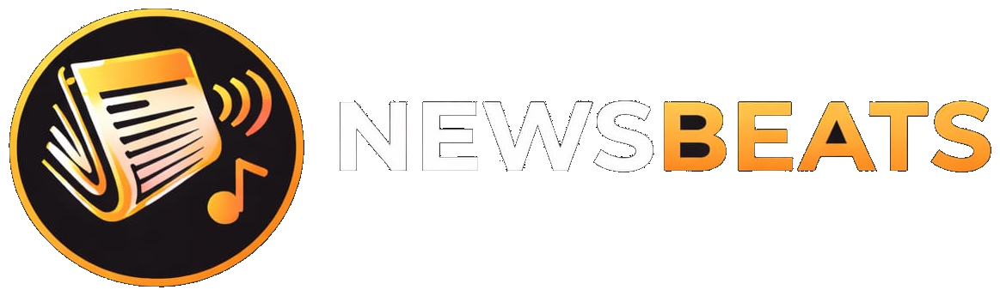

Projet
L'app qui transforme l'actualité en expérience musicale. Reste informé — autrement.
À propos
Newsbeats fusionne deux univers en apparence opposés : l'information et la musique.
Les dernières news agrégées et présentées de manière claire, sans le bruit des réseaux sociaux.
Une sélection musicale adaptée au ton de l'article — pour une lecture plus immersive.
Conçue pour être fluide et intuitive. L'info, sans friction.
Plusieurs sources, plusieurs perspectives — pour une vision équilibrée de l'actualité.
Newsbeats est disponible en ligne — accès direct depuis le navigateur.